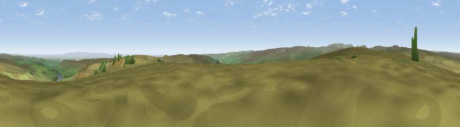

Viewpoint near Lofthouse
#8853 in England · top 11% of its area beats it · near LofthouseWhere it is
The exact computed spot (SE 12762 74975). Click the marker for map links.
The view, rendered

A 360° render of this exact spot computed from the terrain model, tree cover and land cover — summer colours, afternoon light, calibrated against photographs of famous viewpoints. Real trees, hedges and buildings will differ in detail.
The panorama
Grey silhouette: terrain skyline in each direction (720 bearings, Earth curvature and refraction included). Dashed green: skyline with trees (+15 m) and buildings (+8 m) as obstacles. Blue strip: how far the ground is visible on each bearing.
Where the view opens
Wedge length = distance to the farthest visible ground on that bearing (vegetation-aware). Rings at 10, 25 and 50 km.
What fills the view
90% grassland · 5% cropland · 4% woodland ·
Angular shares of the visible panorama (visual magnitude), not map area. Landscape diversity 0.19 (0–1 Shannon).
Key numbers
More beautiful places nearby
The staircase of upgrades: each row has a higher view potential than everything closer. Driving times are estimates from straight-line distance, calibrated against real road routing — check an actual route before setting out.
| Place | Direction | Drive | Score |
|---|---|---|---|
| Viewpoint near Lofthouse | E · 1 km | ~3 min | 65.8 |
| Viewpoint near Lofthouse | WNW · 2 km | ~6 min | 66.1 |
| Throstle Hill | NNW · 3 km | ~7 min | 67.2 |
| Viewpoint near Lofthouse | NW · 3 km | ~8 min | 68.2 |
| Viewpoint near Lofthouse | NW · 4 km | ~10 min | 69.7 |
| Great Roova Crags | NNW · 9 km | ~17 min | 72.5 |
| Viewpoint near East Witton | N · 10 km | ~19 min | 77.8 |
| Viewpoint near Kirby Knowle | ENE · 35 km | ~53 min | 80.5 |
54.17041, -1.80600 · source: screening · position refined by local search. Computed location — check access rights before visiting.